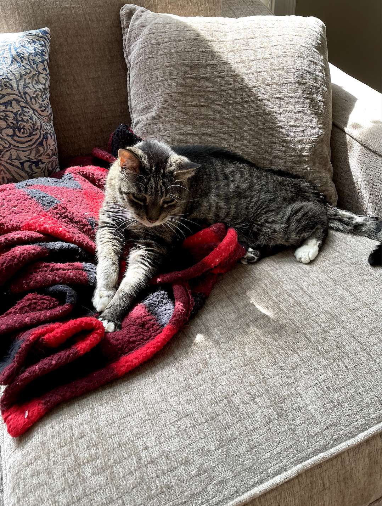
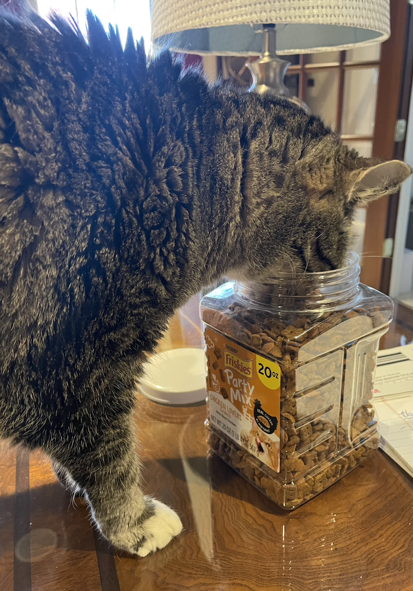
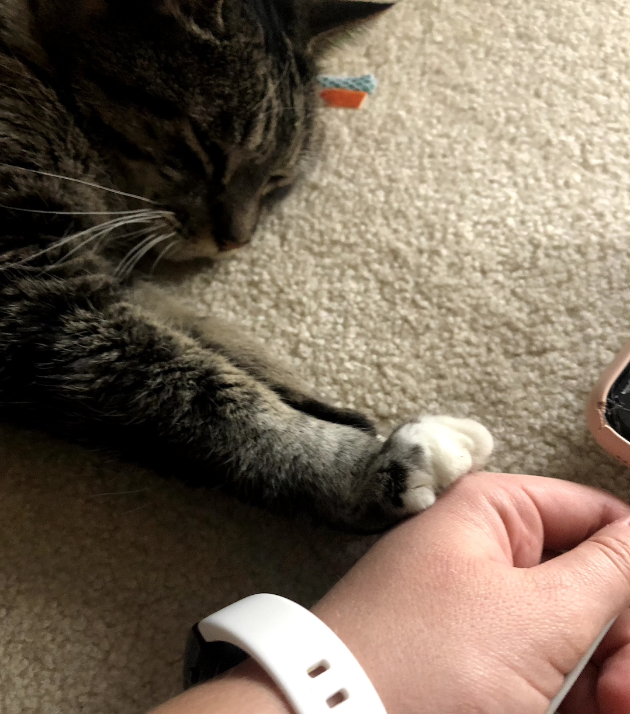
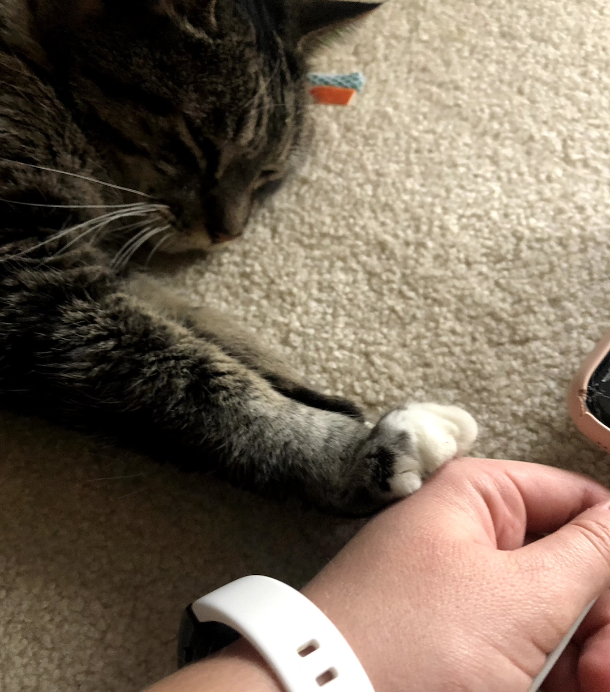
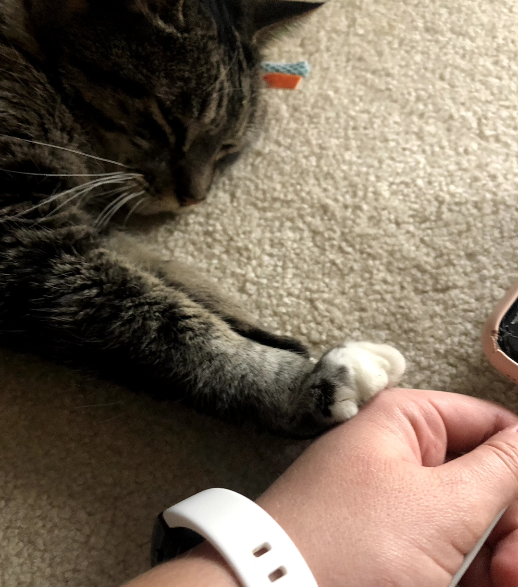

Rocky is a 17 year old cat who enjoys spending his time laying around. He likes watching birds and trying to talk to them.
While he loves birds from afar, he is not a fan of any other animals and enjoys terrorizing the dog, Oliver.Rocky is also a big fan of eating. He will do anything for a treat and likes any and all foods.
He will gladly sneak onto the dinner table to sample any and all foods. If he does not enjoy eating the food,
Rocky is fine with playing with it instead.
Photo Gallery


Likes
Eating
Sleeping
Attention
Pumpkin
Pumpkin is an 11 year old cat. He loves eating. Even when he is full, he will continue to eat if it means
the dog will not get any. Pumpkin also grealy enjoys napping. Half his day is spent asleep and the other half
is spent begging for food.Pumpkin is a very smart cat. He can sense when people are allergic to him so naturally, he
gravitates towards them. He also loves antagonizing Oliver, the dog. However, he does not enjoy
when Oliver barks.
Photo Gallery
Likes
Treats
Sleeping
People who are allergic to him
Oliver
Oliver is very focused on two things: eating and getting attention. He is devestated
when his owner leaves him. Whether she leaves for the day to go to work or for two minutes
to brush her teeth, it all feels like an eternity to him.The only circumstance in which Oliver will leave his owner is when food is involved. Oliver is not
very brave but he is able to muster up a lot of courage when a treat is involved. He cowered away
from a kitten until he noticed she had a full bowl of food.
Photo Gallery
Likes
Irritating cats (or people)
Barking
Treats
Happy
Happy is an old cat. He spends a lot of his day lounging around, in whatever spot he feels is most comfortable at the time.
He is an indoor cat, but whenever we open the door to let the dogs out, he always comes running out so he can eat grass.
Happy is pretty friendly with one of my dogs, Katie. They do not interact much, but when they do, it is usually just friendly sniffs.
My other dog, Izzy, however, loves biting at Happy.
Happy usually will just run away, but sometimes he will retalliate by giving Izzy a smack! It is all in good fun though.
Photo Gallery
Likes
Catnip
Pets
Sleeping
Luke
Luke is a six-year-old white cat; he is very energetic and likes to play fetch. Luke has one brother named Jesse.
Luke loves chicken cat treats, they are his favorite.Luke is very badly behaved. He often jumps up on furniture and drinks out of our water glasses.
He also steals jewelry and hides it in his bed.
Luke knows several commands; he can sit, jump, follow, play fetch, and give people his paw.
Photo Gallery
Likes
Salmon
Playing fetch with hair ties.
Sleeping in laundry baskets
Molly
Molly is an 18 year old calico cat. She prefers spending her days lounging on the couch or curled up sleeping over a vent (or anything warm).
Occasionally, she will go outside and attempt to hunt birds or rats (sometimes successful which is terrifying).Her favorite habit is to brush against our legs, especially during dinner when everyone is seated around a table.
She is an attention seeker, always meowing to get as many pets and head rubs as she possibly can.
Photo Gallery
Likes
Scratching couches
Sunbathing
Scrathing against my legs
Lucy
Lucy is a 17-year-old calico that I have had since I was 5, she has pretty much grown up with me my whole life.
Even though she is old she is still kicking it and enjoys running around the house at 4am.Her favorite foods include anything but her kibble. She enjoys sunbathing and long naps, along with lots of petting.
However, she hates getting her stomach rubbed.
 
